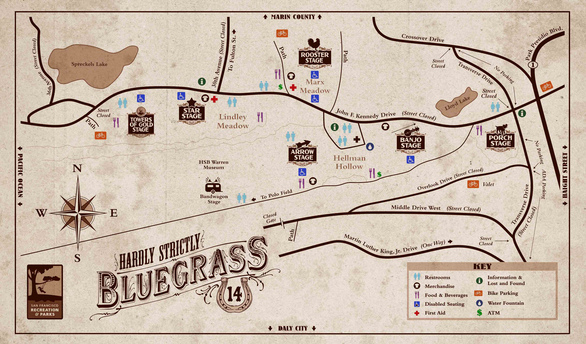

<div class="modal">

  <!--   <div class="buttons">
      <button class="button button-clear" ng-click="closeLogin()">Close</button>
    </div> -->
  <ion-content>
    <div class="modal image-modal transparent">
      <ion-pane class="transparent">
        
      </ion-pane>
    </div>
  </ion-content>
</div>
